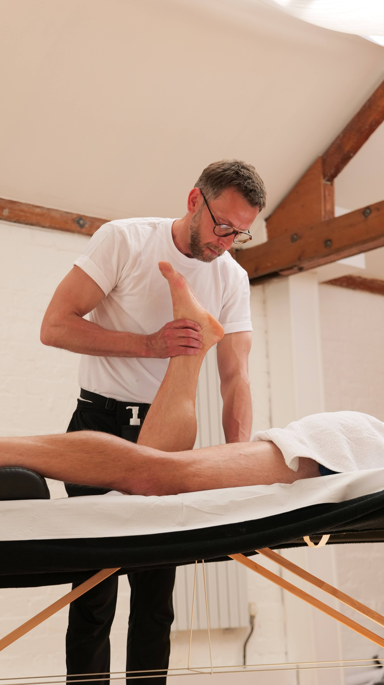
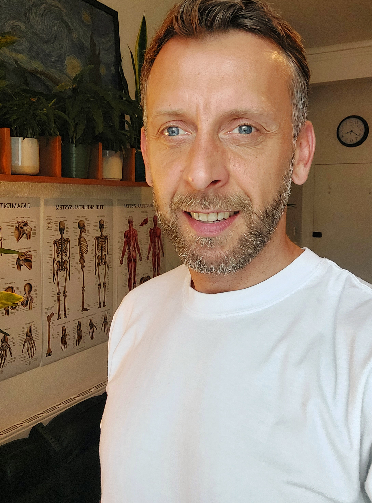

DZ massage therapy
At DZ massage therapy I strive to provide clients with a personalised experience that goes beyond just physical relief, but also brings a sense of peace and relaxation to the mind and soul. I am qualified at level 5 in clinical and remedial sports massage as well as further training in soft tissue therapy.
Specialising in:
- Sports massage
- Cupping therapy
- Trigger point therapy
- Kinesiology
Interested in a treatment?
TreatmentsAbout me
I believe in the power of touch and the healing properties of natural remedies.
I have worked as a palliative care nurse and it was here that I started to appreciate the importance of touch. In massaging patients’ hands or feet I saw how they became relaxed, finding reassurance and safety, and in turn their level of pain diminished, both physically and emotionally. This inspired me to explore the different uses of massage therapy and I decided to train as a sports massage therapist.
As a massage therapist, I strive to provide my clients with a personalized experience that goes beyond just physical relief, but also brings a sense of peace and relaxation to their minds and souls. I also specialize in cupping therapy, trigger point therapy and kinesiology, which allows me to customize treatment plans to suit the specific needs of my clients and help them achieve their health and wellness goals.
As an advocate for healthy living, I prioritize maintaining a balanced lifestyle for myself as well. I enjoy spending time in nature, whether it’s going for a hike, camping, or simply taking a walk around my neighbourhood. I also love animals and believe in the healing power of their companionship.
Meditation is a daily practice for me as it helps me stay centred, calm and focused. Incorporating exercise into my routine is an essential part of maintaining both my physical and mental health. Cycling is my go-to form of exercise, but I also enjoy yoga and strength training.
Overall, my passion for helping others and promoting healthy living is reflected in everything that I do. As a massage therapist, I strive to make a positive impact on the lives of my clients, and as a person I make it a point to live by example and inspire others to do the same.